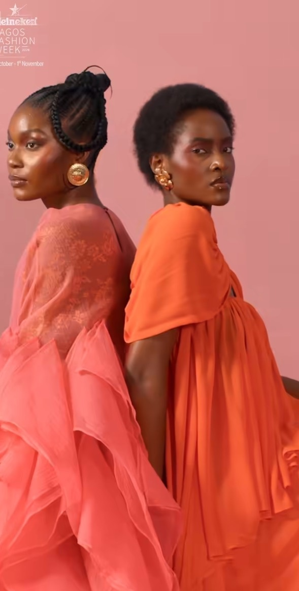

Lagos Fashion Week makes space for fashion’s business side
From fashion-business sessions to a retail presentation, Wednesday’s programme put the work around the clothes in view.

Wednesday’s programme paired fashion-business sessions with a retail presentation by Alára and Emmy Kasbit. Their 6 p.m. slot sat between offsite presentations by Sisiano and Orange Culture; the main runway shows were scheduled to start Thursday.
The businessMore than a runway show
The programme listed sessions on business modelling and franchising, a Bank of Industry session and fashion education with the Italian Institute of Fashion Management. The evening schedule placed Sisiano at 5 p.m., the Alára and Emmy Kasbit retail presentation at 6 p.m., and Orange Culture at 7 p.m.
That pairing matters. A runway can introduce a collection; retail is where a label has to meet the people who might buy it. Lagos Fashion Week’s published programme includes showrooms and retail experiences alongside its shows, giving the business conversation a place beyond the conference room.
Beyond the runwayDesign needsa route to market
The week’s schedule lists Lagos Fashion Week x Alára showrooms and retail experiences, as well as XRetail experiences at Alára, Vanestyle and Zinkata. So the Alára and Emmy Kasbit presentation sits inside a wider retail programme that runs alongside the shows.
Lagos Fashion Week says it brings designers together with manufacturers, retailers, buyers and investors, and that its work extends beyond the runway into business development. Wednesday’s mix of sessions and presentations reflects that stated purpose. It asks audiences to think about fashion as a chain of work, from the idea and the garment to the shop floor.

A useful questionWho gets towear the work?
The business sessions are not a side note to the fashion. They point to the practical questions behind a label’s next season: how it prices, produces, finds customers and keeps operating after the show ends. Those are harder to capture in a photograph than a striking look, but they shape whether the look can become a lasting business.
The schedule tells us what was planned, not what followed. It does not show how many customers the retail experiences reached, whether buyers placed orders or what continued after the event. That distinction matters: putting commerce on a programme is a start, while building reliable routes from African designers to customers takes sustained work.
The runway programme is scheduled to begin Thursday, 29 October, with more business sessions and presentations continuing around it. The useful question to keep asking is whether the conversations and retail connections last beyond the week. Lagos Fashion Week has made room for that question; the published programme alone cannot tell us the answer.